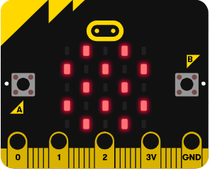
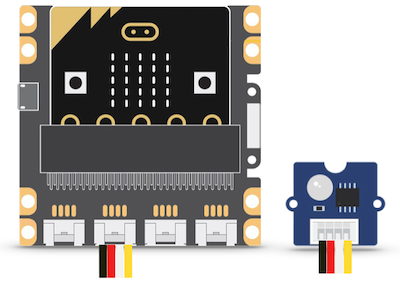

Parcours de découverte : atteindre le niveau !

Ce parcours combine des instructions d'affichage d'images, de mesure du niveau de lumière, de détection de mouvements. L'objectif est de découvrir différents capteurs de la carte et de comprendre et modifier des programmes permettant de détecter un seuil fixé pour l'information mesurée.
Matériel nécessaire :
- une carte micro:bit (ou un simulateur), une lampe (par exemple celle d'un smartphone)
- en option : capteur de lumière du kit Grove, ruban de led de type neopixel
De la lumière !
1 Afficher une image prédéfinie

Voici un premier programme :
from microbit import *
display.show(Image.YES)
- Saisir ce programme et le flasher sur une carte connectée à l'ordinateur.
Que constate-t-on ? - Remplacer dans le programme le mot YES par l'un des mots suivants :
CHESSBOARD - DIAMOND - HAPPY - HEART - NO - SAD - SQUARE - Choisir l'une des images et la reproduire sur une feuille à l'aide d'un quadrillage de 5 carreaux sur 5.
2 Afficher une image personnalisée
-
Saisir ce programme et le flasher sur la carte.
Que constate-t-on ? À quoi correspondent les 0 et les 9 ?from microbit import * mon_image = Image("90909:" "09990:" "99999:" "09990:" "90909") display.show(Image.mon_image) -
Dessiner sur une feuille à l'aide d'un quadrillage de 5 carreaux sur 5 une image personnelle et modifier le programme précédent pour la faire apparaître sur la carte micro:bit.
3 Détecter l'intensité lumineuse
Les LED de la carte peuvent détecter le niveau de lumière ambiante : la fonction display.read_light_level() renvoie une valeur comprise entre 0 et 255 : plus la valeur est élevée, plus l'environnement est lumineux.
from microbit import *
while True:
niveau = display.read_light_level()
if niveau > 220:
display.show(Image.YES)
else :
display.show(Image.NO)
sleep(200)
- Saisir ce programme et le flasher sur une carte connectée à l'ordinateur.
Que faut-il faire pour que l'image Image.YES s'affiche ? - Modifier ce programme pour que la carte affiche un carré en luminosité "normale" et un diamant dans la pénombre.
4 Option : avec un détecteur de lumière Grove

Placer la carte micro-bit sur le shield Grove et connecter le détecteur de lumière sur la broche P0-P14.
Ce capteur renvoie sur la broche sur laquelle il est connecté une tension proportionnelle à l'intensité lumineuse.
Par exemple, si le capteur est connecté sur la broche P0, la fonction pin0.read_analog() renvoie une valeur entière d'autant plus élevée que l'environnement est lumineux.
Saisir et flasher le programme suivant :
from microbit import *
while True:
mesure = pin0.read_analog()
if mesure > 600:
display.show(Image.YES)
else :
display.show(Image.NO)
sleep(100)
- Que peut-on faire pour que l'image Image.NO s'affiche sur la carte micro:bit ?
- Emballer le capteur (connecté à la carte) dans une feuille de papier. Modifier le programme pour qu'il affiche l'image Image.YES tant que le capteur reste emballé et l'image Image.NO dès que l'emballage est ouvert.
Du mouvement !
1 Détecter une secousse
Grâce à un accéléromètre, la carte micro:bit est capable de détecter des gestes, et notamment lorsqu'on la secoue.
L'expression accelerometer.is_gesture('shake') vaut True (vrai) lorsque la carte est secouée et False (faux) sinon.
- Lire le programme suivant et décrire le comportement que devrait avoir la carte après l'exécution de ce programme.
from microbit import *
while True:
secoue = accelerometer.is_gesture('shake')
if secoue:
display.show(Image.YES)
sleep(50)
display.clear()
- Saisir le programme et le flasher sur une carte connectée à l'ordinateur. Verifier si le comportement anticipé est conforme à celui observé.